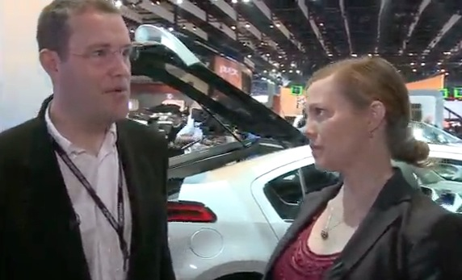
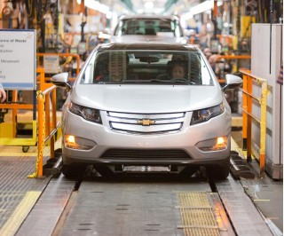
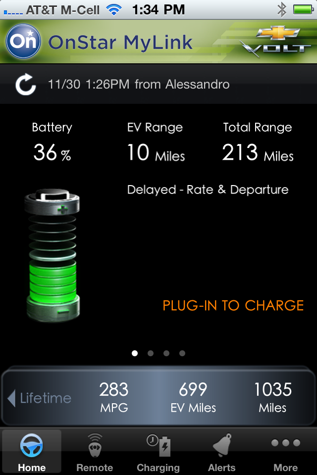
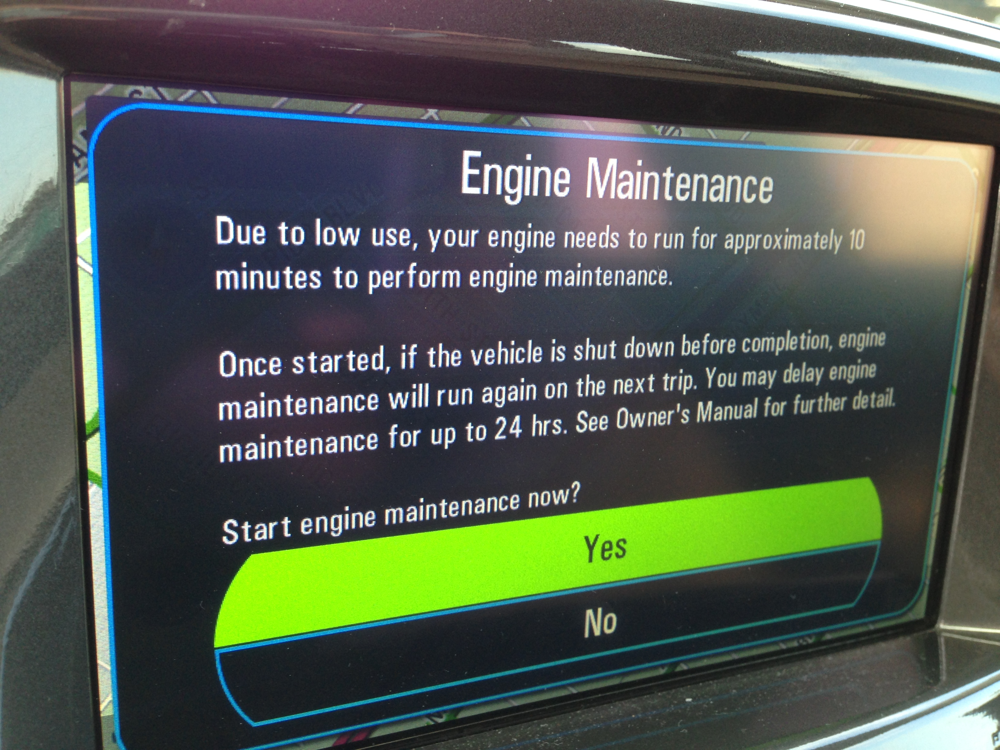
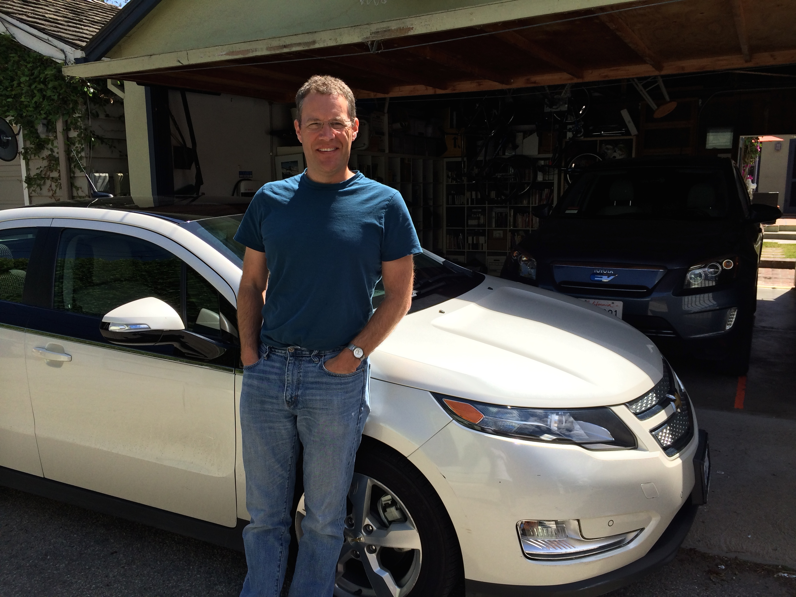
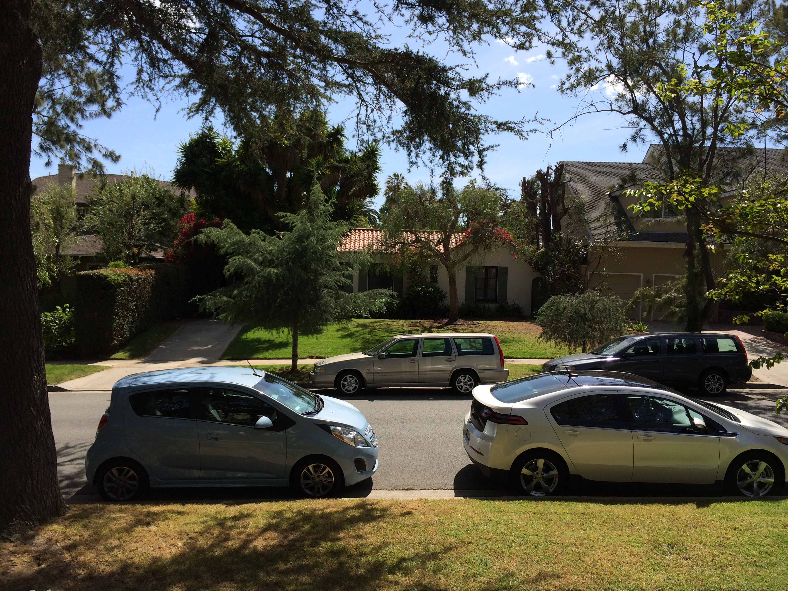
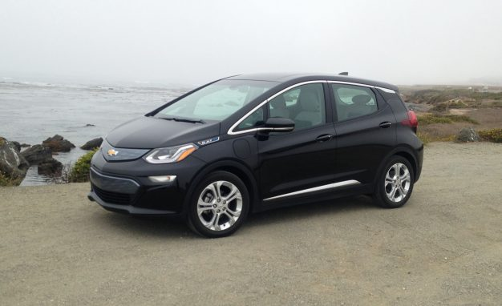

Charity Volt
December 01, 2010
This is quite nice. The very first Volt off the line in official production is going into a museum. (That car is known as Job 1, so it's important.) The SECOND Volt is being auctioned off for charity. When I looked about ten hours ago it was up to $180,000 which is a little more than I plan to spend.
I would love to see a quarter of a million dollars go to teaching Detroit kids the wonders of math and science, so here's hoping Leno is bidding.
I'm a TWiT!
December 02, 2010

Er, maybe I'm ON TWiT. This Week In Tech. I clicked on "Download Video" to see it, but maybe your browser will be smarter.
They misspelled my name, and that was after I wrote it down for them. I do look sort of like a twit.
Building Cars is not Publishing Software
December 03, 2010

Really, one hopes that GM has looked carefully at the example of Eclipse Aviation. This is the story of a software business expert (Vern Raburn) who believed that he could copy his success in the software industry in the aviation industry. It turned out that daily builds of an operating system were very different from the daily test flights of a small jet-powered aircraft. His belief that he could bring a different perspective to a tiny market and beat out companies like Cessna, Beechcraft and Bombardier, all with decades of experience in the field, was blinding. It was a tragic effort to watch unfold.
Read more…
A Losing Proposition
December 04, 2010

Ah, where the rubber meets the road.
Read more…
So Far
December 05, 2010

This was the download from last Wednesday.
Read more…
Click to Upgrade
December 17, 2010
On December 4 in Torrance the Southern California CAB members had a great meet up at GM's facility in Torrance. That's written up on the GM Volt CAB site. While I was there one of the Volt engineers said, "We'll see you this week to upgrade the software in your car." That was exciting news, especially since the only problems I had with the car were with the center stack (entertainment, navigation and climate control with the touch-sensitive button area and the touch screen).
Read more…
Video Stardom
March 31, 2011
Not really. But I am in a tiny section of this video by Alexandra Paul.
[youtube http://www.youtube.com/watch?v=R1jCj1Qz36I]
I need to write about turning in my CAB car and getting my own. I've been busy tooling around in the gorgeous Diamond White Volt, though.
the Nest
November 19, 2011
This is not strictly a post about the Volt, but I have decided this is my all-purpose technology blog as well. As a brief update: I have 6,500 miles on the Volt and I have put in twelve gallons of gasoline. So don’t bother putting in the Keystone XL pipeline for me, I’m trying to get off the pipe as much as I can.
Read more…
Fame!
June 08, 2012
SolarCity came by with a camera crew and talked with me for forty-five minutes about the system I had installed back in 2008. They are going to use this on their website.

Smart Comparison
June 18, 2013
I really enjoyed this:
http://www.cockeyed.com/science/electric_car/electric_car.html
Finally Ignored the Gas Engine Long Enough
June 18, 2013

Your Gas is Old
Even though I wrote a post about it, I was still surprised to see this message. I managed to run the car around only on batteries for the entire month and probably hit the gas few only a couple miles the month before. So the Volt did the math and realized that the engine really needed to run for ten minutes to make sure the fuel in the lines didn't turn into jelly.
Read more…
The Sad End of the Volt
April 28, 2014

Three Happy Years
That was a great car.
When I was asked in Detroit if I thought the Volt would be a good car for me, I answered very honestly and said, "As long as I can do my weekly driving without the internal combustion engine kicking on, I will consider it a success."
We put 21,000 miles on the 2011 Volt I leased three years ago. I filled it fewer than ten times, and the tank is a tiny 9.3 gallons. That seems unreal for a serial hybrid and, in fact, the ICE had to kick on to perform it's "maintenance cycle" because I used it so infrequently.
Nell has a BMW i3 on order. We drove it up in San Francisco when we were there for a weekend. It's a perfect car for her, a lot of the zip of her ActiveE and a more polished platform that is built from the start as an electric vehicle.
That means her current RAV4 EV will become my car, until I can figure out a way to get out of the (sort of expensive) lease. It's fine for a business car (with half the lease being written off), but a little much for what I would want since I drive so little.

Little Brother Blue
In the meantime, since the Volt had to be returned, we leased a Chevy Spark EV for three years. It is a perfect car for Rudy, who is just starting out driving, and it will be a good car for Dexter as well (who might get his license a little sooner than Rudy did, he tends to be a little more independent and nothing encourages independence like being able to drive yourself somewhere in Los Angeles). It has ten airbags, goes 80 miles on a charge and takes up less space in the garage.
So far we have had: an GM EV, the GM EV Gen II, the original RAV4 EV, the Chevy Volt, the BMW ActiveE, and now the Chevy Spark EV. Right now there are just two fully electric cars in the garage. We'll see if we can make do that way or if we need something with a gas engine for longer trips.
Read more…
Buy the Bolt
March 26, 2017
This will eventually be the first entry in my new blog about having a Bolt, which is amazingly close to the perfect electric car and the vehicle that I imagined when I was driving around in the Volt. Since I don’t have the Bolt blog set up yet, I figure I’ll put this at the end of my Volt-a-Day blog, where (according to WordPress metrics) hundreds of people still come to look at the material I wrote when I was part of the Chevy Volt Customer Advisory Board and drove one of the first sixteen Volts allowed on the roads.
If this is too long a read and you came here for advice on how to buy a Chevy Bolt in the Los Angeles area I can tell you that my friend Dean had an excellent experience with Community Chevrolet in Burbank.

This is the story of buying our Bolt. I considered it a bit of a nightmare, but perhaps I am spoiled by the last few experiences, some of which were managed by General Motors itself. You can decide.
To recap, in case you are here without knowing the author, I leased one of GM’s first electric cars, the GM EV1, way back in 1999. It was my wife’s car and she’s now been driving pure electric vehicles for 18 years. We have had, in order:
- GM EV1
- GM EV1 Gen II
- Rav4 Electric
- Chevy Volt, one of the first 16 production cars (4 months)
- BMW ActiveE
- Chevy Volt, 3yr lease
- Rav4 Electric v2
- BMW i3
- Chevy Spark EV
We have a deposit down on a Tesla Model 3, but I tried having a Tesla Model S in the garage for four days and the car is just too big and it’s not what I need for the short-hops I tend to do.
My wife really would like to have a car with more range than her i3, which is an amazing electric car, but which can only go about a hundred miles before it needs to be charged. She was thrilled when she first got her Rav4 Electric because she was able to go up to Ojai for the weekend to write and it made it up there without stopping for a charge.
I was excited when the Bolt was announced and then when I saw several “first drive” articles. Our friend, and my wife’s co-author, Sheryl Sandberg, interviewed Mary Barra for a Facebook Live event and it felt like new technology and new vehicles were really important to the CEO. That was good news. We waited anxiously for the Bolt to show up at local dealers.
Read more…

{kind=link}
{kind=link}
{kind=link}
{kind=link}
{kind=link}
{kind=link}
{kind=link}
{kind=link}